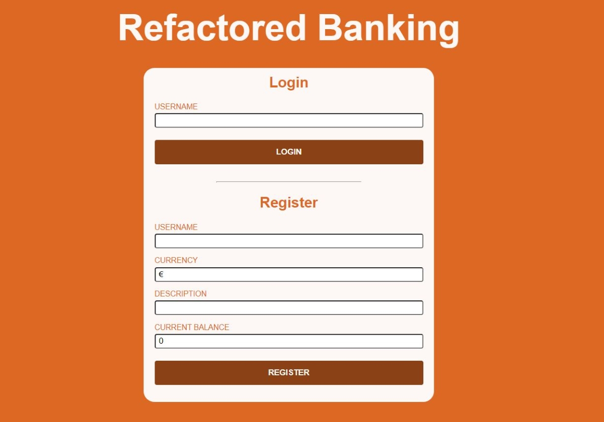

A basic banking app developed in HTML, CSS and JavaScript
A simple banking web app developed following the lessons and tutorials made available via the Microsoft, Web Dev For Beginners repo on GitHub. Development leverages basic HTML, CSS and JavaScript to allow a user to login or register, view transactions on a dashboard and add new transactions. Fetching and persistence of data is managed via a Node.js API (not currently deployed), details of which can be found on YouTube (videos 17 through 21).
The app is developed as an Single Page Application (SPA), leveraging the HTML template attribute to display different sections of the application i.e. login and register, and the transaction dashboard. Custom routing is managed via JavaScript, to append the relevant template within the HTML, as well as managing browser history and URLs, and browser instructions such as Go Back and Go Forward.
Work is currently underway to deploy the required backend API to allow the app to function once deployed. The Web App itself will be deployed using Azure Static Web Apps.
The source code and related repository for this implementation of the banking application is available on GitHub.